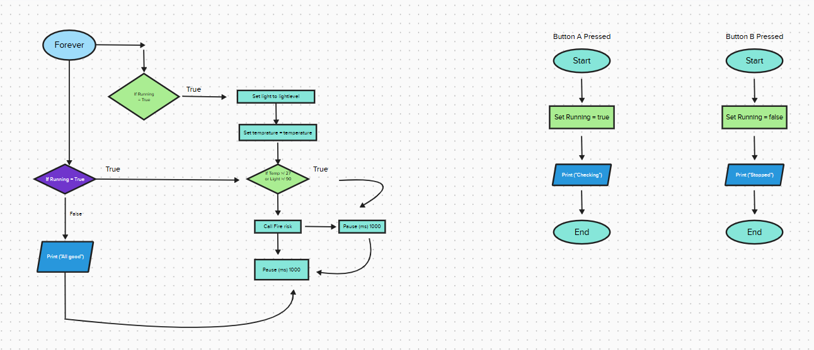
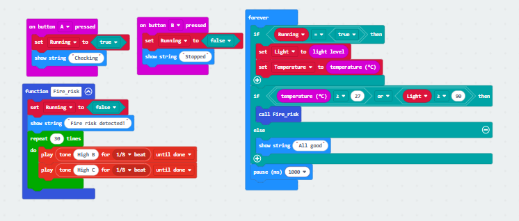

A forest is an ecosystem made up of a dense community of trees. Forests provide habitats for many species around the world. They are essential components of the environment and perform a wide range of functions that support the climate, biodiversity and clean water. Forest fire risk is rising in many parts of the world because conditions are becoming hotter and drier. This makes vegetation more flammable and extends the duration of fire seasons. According to the European Environment Agency, climate change has increased forest fire risks across Europe, with record droughts and heatwaves creating more extreme fire-weather conditions that help wildfires spread quickly [1]. Detailed observations from the European Commission’s Joint Research Centre show that fire danger is expected to increase with higher temperatures, particularly in southern Europe, where climate warming is estimated to increase the number of days with wildfire danger if measures are not strengthened [2]. Independent climate assessments also warn that drought and heat stress will continue to increase wildfire risk globally, linking these changes directly to human-induced warming [3]. Scientific studies recognise soil moisture as a key environmental factor in fire vulnerability. Low moisture content in fuels dramatically increases the chances that a small spark will develop into a larger fire [4]. Monitoring these variables in real time allows authorities to issue warnings and use their resources efficiently in areas where the risk is highest. Modern examples of wildfire prevention include using technology to monitor forests. For example, Bosch uses sensors to detect signs of fire, such as rising temperatures or dangerous gases, which helps alerts to be sent quickly. Dryad Networks also uses small sensors placed in forests to measure temperature, humidity and air conditions. This data is examined to identify dangerous changes early, helping to predict when fire risk is increasing instead of only reacting after a fire has started [5]. Overall, this research concludes that the risk of forest fires is constantly changing. It depends on factors such as weather, climate and the condition of the land. Managing this risk properly therefore means continuously monitoring the environment and using models and technology to understand and reduce the risk.
The main aim of my project is to create an embedded system that monitors and simulates wildfire risks in a forest. Environmental data, such as temperature, sound and light intensity levels, will be collected by the system to create a model of the conditions that make forest fires more likely. The whole project will be completed in line with all the requirements, and the final product will be safe and efficient. To meet Basic Requirement 1, I plan to build an embedded system with a micro:bit. This system will include a temperature sensor as the analogue input and a sound sensor as the digital input. The system will have different outputs, such as the micro:bit’s LED display and a buzzer, which will show the different levels of fire risk. The system will be started manually by pressing a button and will then run automatically. To meet Basic Requirement 2, I will gather and store environmental information from the sensors. The temperature, sound and light levels will be recorded and then transferred to a computer. Eventually, this data will be used in my Python disaster-risk model. To meet Basic Requirement 3, I am going to simulate the real-world process of increasing wildfire risk. This will be done by raising the temperature around the sensor, creating sharp sounds near the sound sensor and changing light levels to represent smoky conditions. As a result of these changes, the system will respond quickly. I plan to meet Advanced Requirement 1 by developing a Python-based wildfire risk model, using data from my embedded system along with other simulated or real-world environmental data, such as humidity. To satisfy Advanced Requirement 2, I will produce two “what if” scenarios. I will increase temperatures and reduce humidity to understand how these changes will affect the predicted fire-risk score. Lastly, to meet Advanced Requirement 3, my embedded system will have a feedback tool that will trigger a warning when the fire risk exceeds a specific level.
Initially, I had two ideas: a forest weather station that would measure temperature and humidity, and a wildfire risk alerting system that would react to changes in environmental conditions. Although both ideas were suitable, I felt that the wildfire risk alerting system would be a more realistic model of a real disaster. It would also show how simulation, prediction and feedback could work together. When considering which sensors to use, I assessed each option. I chose temperature sensors to measure the threat of wildfire. In addition, I chose a sound sensor so that the alerting system could simulate other factors that may indicate a fire, such as crackling sounds.
Firefighters and scientists are stakeholders in this system. These groups will benefit from notifications and warnings about unsafe environments, which will allow them to react quickly before a fire can grow. Educational institutions are also important stakeholders, as this system could be used as a teaching tool for students and show how technology can help solve problems associated with the environment. End-user needs include trustworthiness and accuracy when collecting data, as well as user-friendliness when displaying and processing information. This system fulfils the user's requirements with an LED display that provides a visual representation of the warning, along with a buzzer that will notify the user when there is a high-risk situation.
Micro:bit – Controls the system and processes data from the sensors. Temperature sensor (analogue) – Measures heat levels associated with fire risk. Sound sensor (digital) – Detects crackling or sharp sounds. LED – Displays the fire-risk level. Buzzer – Gives a warning. Microsoft MakeCode (makecode.microbit.org) – Used to program the micro:bit, read sensor data and calculate fire risk. Python – Used to build the model, review collected data and run “what if” simulations.

Week 1 One of the objectives for my project was to build an embedded system based on the micro:bit because it includes both temperature and light sensors. At this stage of my project, I planned to design it so that the micro:bit would use variables to record sensor readings, such as temperature and light levels. These readings would be used to determine whether the predefined thresholds had been exceeded and whether a warning should be triggered to indicate a fire risk. Week 2 I started the development part of my project by using the Microsoft MakeCode block editor to create code to program the micro:bit. I created variables to hold the sensor data for temperature and light levels. A forever loop is used within the code so that the monitoring process is performed continuously and provides regular data, rather than running only when a button is pressed. Week 3 A fire-risk function was created. It is activated when the temperature and light levels exceed the predefined thresholds. I added start and stop controls using the buttons on the micro:bit so that the user can manually start or stop the system. I tested the system under various conditions to ensure that fire-risk scenarios were detected properly and that a warning message was displayed.
To test the system, several tests were carried out to make sure that the micro:bit could identify conditions associated with a high fire risk. The system monitors the temperature and light levels using its built-in sensors. Various conditions were used to test the system. For example, the micro:bit was placed near a source of light to replicate conditions with increased light levels. Similarly, the micro:bit was placed near a warm area to replicate conditions with increased temperatures. The system monitors these conditions using a forever loop that continuously checks the readings against the thresholds. If the readings exceed the thresholds, the system calls the fire-risk function to display a message and stop the system.
| Test | Temperature | Light Level | Expected Result | Actual Result |
|---|---|---|---|---|
| 1 | Low | Low | No fire risk | System shows “All Good” |
| 2 | High | Low | Fire risk detected | Warning displayed |
| 3 | High | High | Possible fire risk | Warning triggered |
| 4 | Normal | Normal | Safe conditions | System continues monitoring |
One problem I encountered during development was that the system was only checking the sensor values when the button was pressed. This was a problem because the system was not checking the conditions continuously. To solve this problem, I decided to place the sensor-checking logic inside the forever loop. This made sure that the micro:bit was always checking the environmental conditions when the system was activated. This improved the functionality of the system because the micro:bit checked the temperature and light levels continuously while the system was activated. This made the system more realistic.

This project uses a micro:bit as an embedded system to simulate a model for the detection of wildfires. The system monitors environmental conditions using temperature and light sensors. After the program starts, the system waits until the user presses Button A to begin the monitoring process. Button A sets the variable “running” to true. After being activated, the program enters a continuous loop and keeps reading temperature and light sensor data. The sensor data is stored in variables and compared against the thresholds to check for dangerous environmental conditions. If both the temperature and light levels are high enough to represent a possible fire danger, the system considers this a potential fire risk. When these conditions are detected by the embedded system, it calls a function (fire risk) that displays a message on the LED display, warning the user of a potential fire. This shows that the embedded system adapts its output according to the sensor readings. If the environmental conditions remain within the safe thresholds, the embedded system continues to monitor the environment and displays a message indicating that conditions are normal. This demonstrates how embedded systems can be an effective way to monitor and detect hazards in the environment.
Overall, I believe that my project was successful in creating a working embedded system that modelled wildfire risk using sensors. The embedded system uses a micro:bit to monitor temperature and light levels to help identify potential fire risks by tracking readings that exceed the thresholds. The system also continuously monitors the environment and automatically triggers warnings in the case of unsafe values. I feel that I fulfilled Basic Requirement 1 by developing an embedded system using a micro:bit with different inputs and outputs. In my project, there are two types of sensor inputs: one measures light and the other measures temperature. Their outputs are displayed on the LED. Buttons on the micro:bit can be used to start and stop the system. I also met Basic Requirement 2 by using sensor data to create variables. The program can then use these variables to determine whether the readings represent a potential fire risk. As for Basic Requirement 3, the project showed how environmental monitoring systems can simulate real-life processes by using sensors to provide warning messages when environmental readings reach dangerous levels. Overall, the project demonstrates how embedded systems can perform a role similar to traditional disaster-detection systems by providing timely notifications based on input from sensors.
One possible area for improvement would be to add more environmental sensors, such as humidity or smoke detection. Actual wildfire monitoring systems use many different environmental factors when determining the likelihood of a wildfire occurring. Therefore, adding more sensors to this project could make the fire-risk result more accurate. Another improvement would be to create a more visible risk level on the LED display, which would make it easier for users to quickly assess the situation.
[1] European Environment Agency – Forest Fires in Europe
[2] European Commission Joint Research Centre – Wildfire Report
[3] Germanwatch Climate Risk Index Report
[4] MDPI Study – Soil Moisture and Fire Risk
[5] Dryad Networks – Wildfire Sensor Technology
| Section | Word Count |
|---|---|
| Meeting the Brief | 0 |
| Investigation | 377 |
| Plan and Design | 654 |
| Create | 709 |
| Evaluation | 296 |
| Total | 2036 |